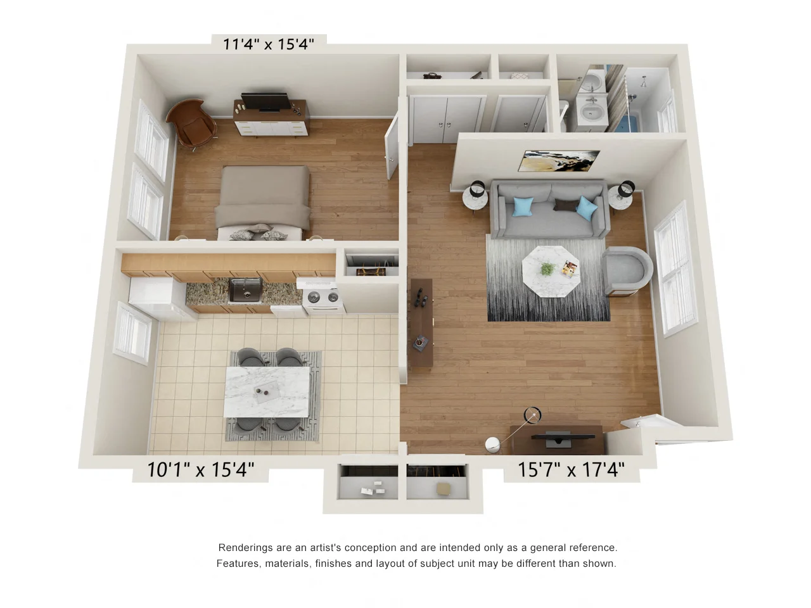

Hawkins Meadows
Hawkins Meadows is a welcoming residential community that features a variety of one and two-bedroom apartments, making it an ideal choice for students, young professionals, and families. While it might not be within walking distance to major attractions, the inviting atmosphere and well-maintained living spaces more than make up for it.
Having a car can be useful when living here, but don't worry if you don't have one, as the B43 bus route is conveniently close by. This connects you to UMass Amherst, Amherst College, and Hampshire College with ease. Additionally, a range of local amenities, including grocery stores and restaurants, are just a short drive away. At Hawkins Meadows, you'll discover the perfect balance of peaceful living and easy accessibility, making your living experience genuinely delightful.
On the map, it's conveniently represented here:
Key Information
- Price Range: The monthly rent at Hawkins Meadows varies from $1,575 to $1,875.
- Bus Routes: The property is located on the routes of Bus B43 and Bus 33.
- Contact: For further details, please visit their website or call at 413-345-2432.
- Apartment Types: They offer 1 bedroom, 1 bathroom and 2 bedroom, 2 bathroom apartments.
From an individual tenant's perspective, here's a breakdown
- Rent Amount: A shared room in Hawkins Meadows ranges from $700 - $800.
- Number of Roommates: Usually, there is only 1 roommate in the accommodation.
- Proximity to Amenities: Hawkins Meadows earns a 5* rating for its proximity to grocery stores, restaurants, and other amenities.
- Commute Rating: With a rating of 4*, commuting from Hawkins Meadows is quite comfortable and convenient.
- Likes: Tenants appreciate the well-maintained place with a pool, large kitchen, and spacious floor plan. They also enjoy the close proximity to the bike path and being on the B43 bus route.
- Dislikes: The only notable concern is the slightly expensive rent, which becomes more manageable with a roommate.
- Overall Satisfaction: Taking all factors into account, Hawkins Meadows holds a satisfactory rating of 4*.
- Additional Comments: The bike path and walkable commute options are highly appreciated by tenants, making it a pleasant place to live.
Floor Plans
| Image | Square Feet | Configuration |
|---|---|---|
|  | 700 | 1bd/1ba |
 |
918 | 2bd/1ba |
Note: *All ratings mentioned are on a scale of 5.
This book was created by Subramanya Nagabhushanaradhya with the help of wonderful friends. For feedback, errata and suggestions, the author can be reached on linkedin. copyright ©2023 Subramanya Nagabhushanaradhya